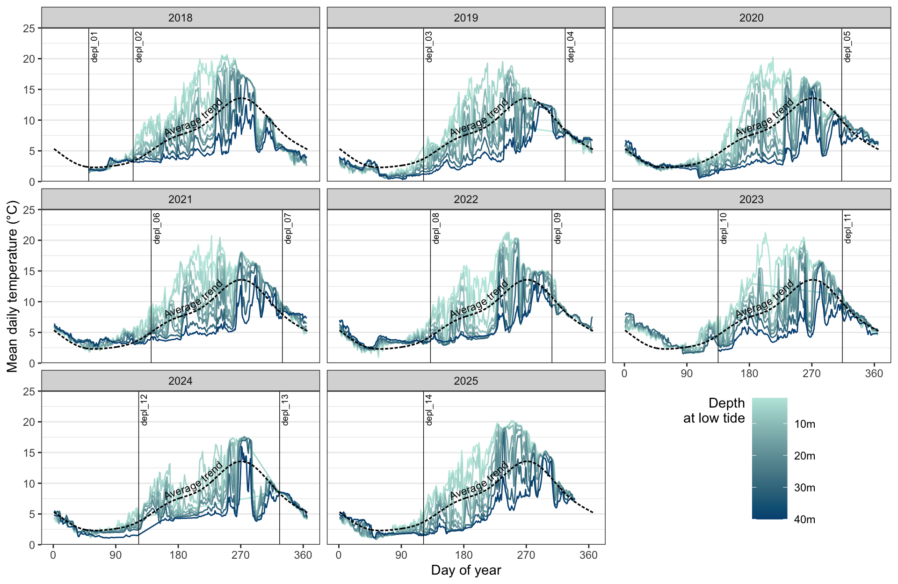

Code
library(tidyverse)
library(geomtextpath)
library(wacolors)
d = read_rds("temp.rds")
m = mgcv::gam(mean_temp ~ s(yday), data = d)
d_avg = tibble(
yday = 1:366,
mean_temp = predict(m, newdata = tibble(yday = 1:366))
)
ggplot(d, aes(yday, mean_temp, color = -depth_lowtide, group = depth_lowtide)) +
facet_wrap(~ year(date)) +
geom_line() +
geom_textline(
aes(yday, mean_temp),
data = d_avg,
inherit.aes = FALSE,
label = "Average trend",
lty = "21",
lwd = 0.6,
hjust = 0.55,
vjust = -0.1,
size = 3.0,
text_smoothing = 20
) +
geom_textvline(
aes(xintercept = yday(date), label = deploy_id),
size = 2.5,
hjust = 0.975,
vjust = 1.2,
lwd = 0.25,
data = summarize(d, date = min(date), .by = deploy_id)
) +
scale_color_wa_c(
"sea",
name = "Depth\nat low tide",
which = 5:15,
labels = \(x) scales::number(-x, suffix = "m")
) +
scale_y_continuous(
"Mean daily temperature (°C)",
limits = c(0, 25),
expand = c(0, 0)
) +
scale_x_continuous("Day of year", breaks = seq(0, 360, 90), expand=c(0, 0)) +
theme_minimal() +
theme(
panel.grid.major.x = element_blank(),
panel.grid.minor.x = element_blank(),
panel.grid.minor.y = element_blank(),
panel.spacing.x = unit(0, "cm"),
strip.text = element_text(size = 12, face = "bold"),
legend.direction = "vertical",
legend.position = "inside",
legend.key.width = unit(0.05, "npc"),
legend.key.height = unit(0.25 * 1/6, "npc"),
legend.title.position = "left",
legend.title = element_text(hjust=1, vjust=1),
legend.justification.inside = "center",
legend.position.inside = c(5 / 6, 1 / 6),
)